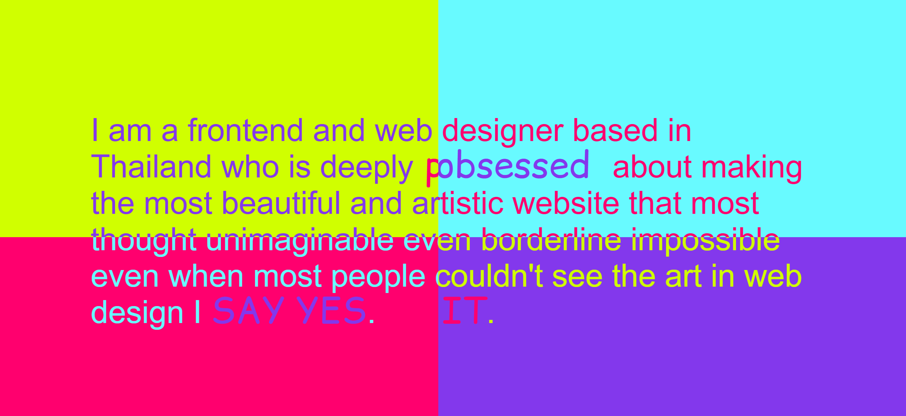
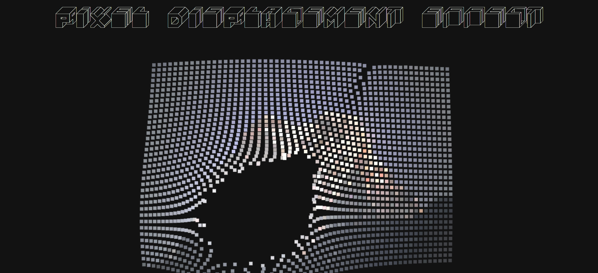
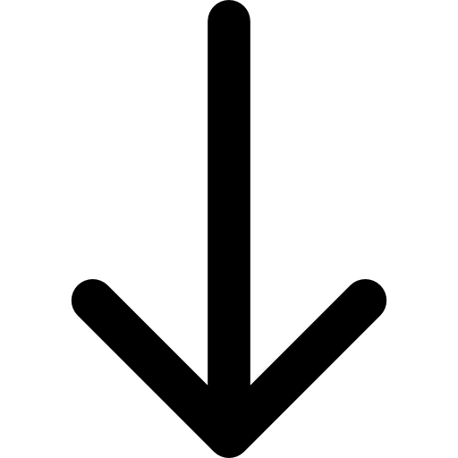
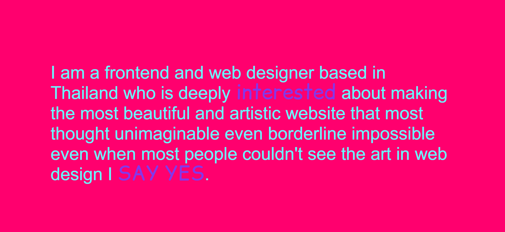
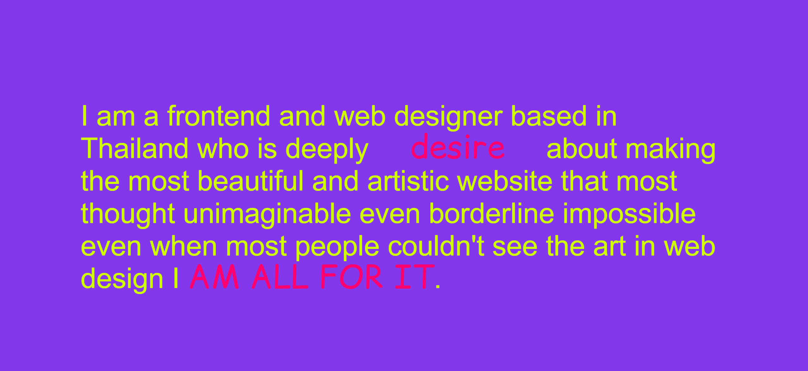
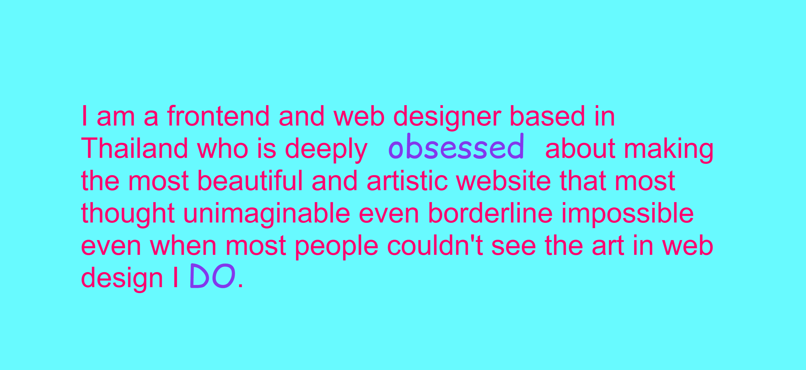
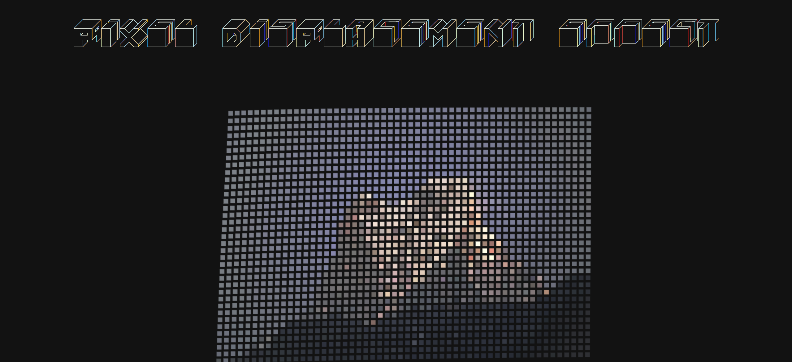

First Impressions
When first interacting with the experience, the most conspicuous element was easily the use of colour - incredibly saturated, bold and conflicting. Following this, it's difficult not to notice how these colours shifted around and took over different areas of the screen in response to the cursor's movement around the webpage, nothing like anything I'd experienced on a website before. This almost instantaneously gave me the impression that the website was quite personal or experimental to the author, more so a form of artistic expression as it clearly avoided the characteristics of a professional site.
MY EXPERIENCE WENT A LITTLE LIKE THIS...




While almost every element on this website provided some form of INTERACTIVITY in response to the user's cursor, I spent the most time interacting with the largest elements - the content at the top of the page, watching how the colours and select words transformed in response to the location of my cursor, and the "pixel displacement effect" further down the page, where squares of a pixelated image dispersed away from my cursor. I wouldn't describe these features as entirely intricate, but they certainly stood out from a webpage that was relatively simple and lacking content, so I ended up engaging more with the elements that responded with the most feedback.
THE WEBSITE AS AN EXPERIENCE
Unlike other websites, where I would probably have some sort of a sense of direction, searching for links or information and being particular with how I navigated content, I found that my most common action was simply moving my cursor all around across the page. Perhaps this is apart of the website's notion of embracing art in web design. It's not just about the appearance, but also about the experience, what it makes you feel and do, implementing niche elements, and becoming aware of the freedom it gives you, as the user, to interact and explore, before you even realise it.
SO WHAT'S THE MAIN MESSAGE?
My impression of the intended primary goal of this website is to make a statement, not only through words, about challenging the boundaries of web design as an art form. I appreciated how interacting with the only big block of text on the website also created small variations in key words of how the author viewed these boundaries and challenged them, depicted below, but I believe it still does a lot more than simply stating this fact, to not only persuade through explaining, but through making an effort to show and embody it. But how does it really communicate this goal?



I believe the experience is only really made to be interacted with once, for its purpose to be acknowledged. It’s not really something to go back to in a way that would shift your perspective or ideologies, no updates or things to go back to. Over time, through interacting with the elements on the webpage, the user would likely grap and idea of the author as an individual in terms of their core values and professional perspective as a web designer, or “artist”, and perhaps follow their links if they wanted to learn more.
Again, the webpage in its entirely is relatively simple, and lacks content. It doesn’t necessarily prompt the user to follow each interaction in chronological order, so the experience is quite variable, especially as it uniquely responds to the user. Due to its simplicity, it’s easy to run out of things to do. It seems to provide these small interactions to back the author’s primary message, and not much else is really said.
REFERENCES & THOUGHTS
Unlike most webpages serving as personal portfolios, I found that this experience’s references to other media forms were quite limited. Besides from its few interactive elements, such as responsive graphics, objects and text, I inferred that the “perfectly center div” interactive triangle in the middle of the website subtly refered to a popular internet joke which referenced the difficulty of centering a div in CSS both vertically and horizontally. From my perspective, it attempts to bridge the gap between web design and web art with like-minded web developers through a relatable reference, taking something technical and transforming it into something artistic and interactive.
I believe these references communicate that the user should act without too much thought, but also prompts them to infer each individual purpose of the interactive elements on the page and explore their nature, rather than relying on navigational tools or descriptions, as these interactive elements are left without any form of explicit explanation.
I feel like this prompts the user to view the experience as more casual, rather than strictly professional (as it is technically supposed to be a portfolio), at least for me. Being simplistic, everything is rather subjective and inviting. They would likely read the only sentence at the top of the webpage, and with that in mind, begin to develop an understand the artistic potential of web design, or at least through the lens of the author.
SOME FURTHER THOUGHTS...
However, the most frustrating part about the interaction is that there isn’t really much to do. Apart from serving symbolic and artistic purposes (such as to exhibit the capabilities of web design), elements can be interacted with to no definite outcome. Links at the bottom of the webpage lead to the artist’s contact pages and socials, and have really the only technical purpose. To an average viewer, expecting a portfolio, there isn’t really much content to show. It honestly depends on your lens and mindset. Or maybe if you’re looking for something in particular. Additionally, while most of the elements do respond to the user's interaction, it is still limited to a simple system. Even for the most complex feature, all the squares which comprised the mosaic image in the “pixel displacement effect” section would do is avoid the cursor, and nothing else, which was also a bit frustrating. Then again, at least it was more subjective than leading to a fully concrete outcome, with the ability to produce some pretty unique patterns, as opposed to the element's response being the exact same every time.

Despite this, the most satisfying part of the interaction is that there isn’t really a right or wrong way to interact with it or read through its content. It’s layout and appearance isn’t entirely structured - it isn’t subtly designed to subconciously get you to go through the contents of the webpage in a certain order, or have one prominent element that directly leads to the next. The lack of a sense of direction is pleasing in a way where the user is less likely to feel prompted or manipulated by the website’s design. This website is quite literally the polar opposite of conformity, and I'm all for breaking boundaries a little bit.